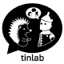
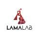

Rigorous Benchmarking of AI Agents with a Scientific Research Suite
Evaluating Multimodal Autonomous Agents in Realistic Scientific Workflows
Toward Rigorous Assessment of Language Agents for Data-Driven Scientific Discovery
Evaluating AI's Ability to Replicate AI Research
Fostering the Credibility of Published Research Through a Computational Reproducibility Agent Benchmark
A Research Coding Benchmark Curated by Scientists
Evaluating Machine Learning Agents on Machine Learning Engineering
Measuring Capabilities of Language Models for Biology Research
a Suite of Tasks for Frontier AI Research Science Agents
Evaluating frontier AI R&D capabilities of language model agents against human experts
Can Language Agents Solve Machine Learning Research Challenges?
Evaluating AI Agents on Open-Ended Machine Learning Research
Evaluating Agents' Ability to Conduct Innovative LLM Research
Interactive Environments for Empowering LLM Agents in Machine Learning Engineering
Scaling Data-Driven Discovery Tasks Toward Open Co-Scientists
Reproducing NanoGPT Improvements
Evaluating Language Model Agents on Real-World AI Research
A Holistic and Rigorous Assessment of AI Systems on Building Better AI
Benchmarking Machine Learning Agents for Scientific Research
Can Coding Agents Match the Published SOTA of Nature-Family Papers?
Evaluating AI Agents on the Rediscovery of Scientific Insights
Probing Scientific General Intelligence of LLMs with Scientist-Aligned Workflows
Evaluating Machine Learning Agents on Real-World Research Repositories
Act As a Real Researcher: A Suite of Benchmarks Evaluating Frontier LLMs and Agentic Harnesses in Research Lifecycle
Benchmarking AI Agents for Addressing Scientific Challenges Across Scales
Evaluating Agents on Setting Up and Executing Tasks from Research Repositories
How Far Are Data Science Agents from Becoming Data Science Experts?
Data Agent Benchmark for Multi-step Reasoning
a Comprehensive Benchmark for LLM-based Agents in Computational Biology
Benchmarking LLMs on Implementing Novel Machine Learning Research Code
Evaluating Language Models on Multiphysics Reasoning Ability
Benchmark for Data Science Agents on Tabular ML Tasks
An Agent Benchmark for Exploratory Real-World Financial Data Analysis
Benchmarking AI Agents with Particle Physics Analysis Reproduction
A Code Benchmark for Scientific Computing and Visualization in Astronomy
A Benchmark for Bioinformatics Code Generation with Large Language Models
Benchmarking LLMs in Agent-driven Algorithmic Reproduction from Research Papers

RExBench
Can coding agents autonomously implement AI research extensions?
Evaluating LLM Agent's Ability on Reproducing Language Modeling Research
From Reproduction to Replication: Evaluating Research Agents with Progressive Code Masking
Can AI Agents Replicate Astrophysics Research Papers?
Can Agentic AI Systems Assess the Reproducibility of Social Science Research?
Benchmarking LLM Agents for Replicability in Social and Behavioral Sciences
Can Coding Agents Reproduce Findings in Computational Materials Science?
A Multidimensional Evaluation for Deep Research Agents, from Answers to Reports
Assessing AI's Potential to Assist Research
An Open Evaluation Platform for Non-Verifiable Scientific Literature-Grounded Tasks
A Live Benchmark and Automated Evaluation for Generative Research Synthesis
Evaluating Scholarly Question Answering at Scale Across 75 Fields with Survey-Mined Questions and Rubrics
Can Language Models Accurately Cite Scientific Claims?
A Dataset of Peer Reviews (PeerRead): Collection, Insights and NLP Applications
A Scientific Question Answering Dataset from Peer Reviews
A Benchmark for Error Identification and Localization in Scientific Papers
Benchmarking Large Language Models' Ability to Collect and Organize Information as Research Agents
A New Dataset and Benchmark Tasks for AI-Assisted Scientific Workflows
Benchmarking AI Agents on Complex Scientific Literature Discovery
Evaluating Literature Review Agents with Battle-Style Peer Review Platform
A Completeness- and Correctness-Oriented Benchmark for AI Reviewers
Evaluating LLMs' Divergent Thinking Capabilities for Scientific Idea Generation with Minimal Context
ResearchBench: Benchmarking LLMs in Scientific Discovery via Inspiration-Based Task Decomposition
A Diagnostic Benchmark for Set-Valued Hypothesis Generation under Underdetermination and Sublinear Coverage Bounds
Evaluating LLM Generated Research Ideas with Battle-style Human Expert Assessment
A Graduate-Level Google-Proof Q&A Benchmark

ChemBench
Are large language models superhuman chemists?
Probing the limitations of multimodal language models for chemistry and materials research
Benchmarking Large Language Models for Materials Science Tools
Benchmarking the Reasoning Ability of Large Language Models in Materials Science
An LLM Agent Benchmark for Automated Gene Expression Data Analysis
Measuring understanding of biological lab protocols by large language models
A Corpus and Benchmark for Biological Protocol Reasoning in Autonomous Science
An Improved Benchmark for AI Systems Performing Biology Research
A Realistic Virtual EHR Environment to Benchmark Medical LLM Agents
Probing the Critical Point (CritPt) of AI Reasoning: a Frontier Physics Research Benchmark
A Multimodal Reasoning Benchmark for Microscopy-Based Scientific Research
Benchmarking LLMs on Safety Issues in Scientific Labs
A Multi-Level Large Language Model Evaluation Benchmark for Scientific Research
Evaluating College-Level Scientific Problem-Solving Abilities of Large Language Models
Benchmarking LLM Proficiency in Scientific Literature Analysis
Evaluating Multi-level Scientific Knowledge of Large Language Models
An Open-source Evaluation Toolkit for Scientific General Intelligence
Benchmarking Multi-discipline Cognitive Reasoning for Superintelligent AI
Matbench Discovery -- A framework to evaluate machine learning crystal stability predictions
Establishing a Methodology for Evaluating AI Models as Scientific Research Assistants
The SciFy Scientific Feasibility Benchmark
Nothing matches those filters.